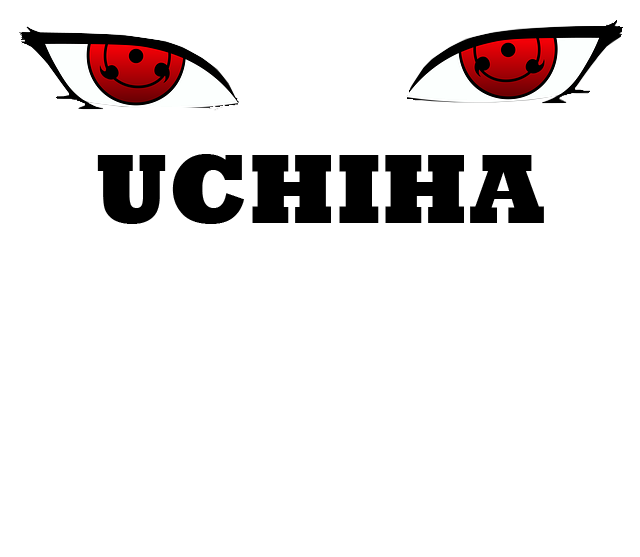
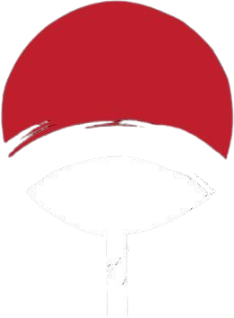
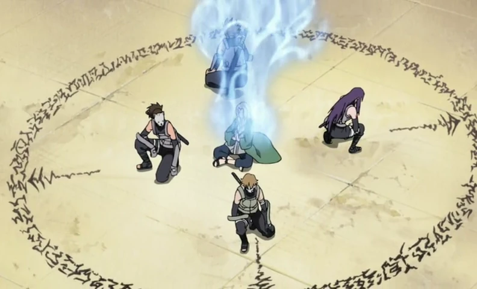
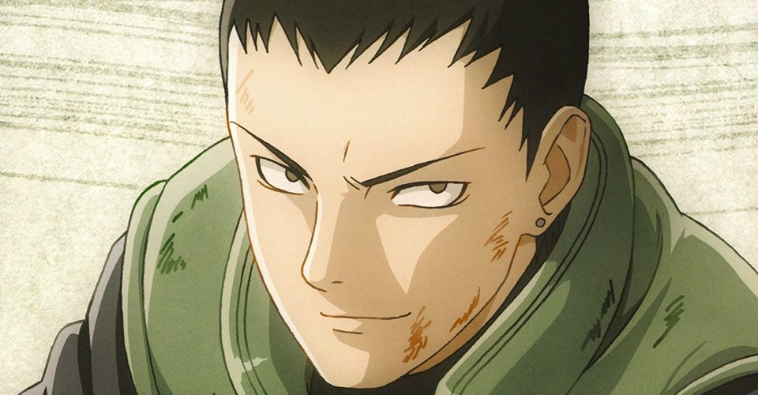
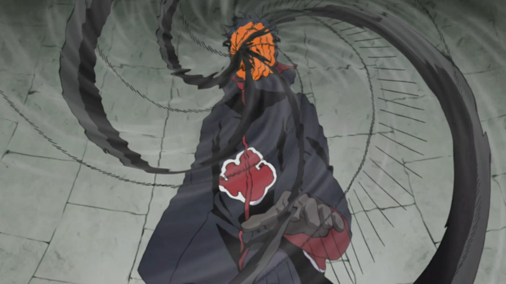

Shinji UCHIHA
l’Oeil du Crépuscule
Qui est Shinji Uchiha
Shinji est un enfant du prestigieux clan Uchiha de Konohagakure. De nature enfantine, Shinji apprécie fortement jouer dans la cour du domaine Uchiha. Cependant, il aime rester dans son domaine avec les siens préférant l'ambiance de son clan au monde extérieur. Au fil des journées, il développa une relation fusionnelle qui se détériora avec le temps. Lorsque le père de Shinji apprit cela, il emmena Shinji et son ami vers l'age de 7 ans en voyage près du Pays de la Pluie dans le but de ressouder leur lien. Malheureusement, ce voyage provoqua un changement drastique dans la vision de l'inconnu de Shinji et de son ami…
"L'art n'est pas beau par son apparence, le véritable art est beau de sens, ainsi reconnaît-on un artiste."
-Shinji Uchiha
Lors de ce voyage au Pays de la Pluie, Shinji et son ami décidèrent de s'aventurer dans un hameau. Ces derniers aperçurent à l'intérieur un enfant accompagné d'un homme se trouvant à 60 mètres d'eux. Décidés à s'aventurer de plus en plus loin, Shinji et son ami furent interrompus par trois ninjas se déplaçant proche d'eux en saut de chakra. La chance tournant de leur côté, ils ne furent pas repérés par ces ninjas et décidèrent d'observer les ninjas non loin d'eux. En les observant, ils distinguèrent au loin les ninjas s'approcher de l'homme accompagné d'un enfant et déclencher un conflit qui éclata entre eux. Son ami s'aperçut que l'un des ninjas effectuait un mouvement étrange en sortant quelque chose de sa poche et alerta immédiatement Shinji, qui, de nature très serviable, souhaita intervenir afin de porter main forte à l'homme. Mais finalement, il écouta son ami et n'aida pas l'homme en danger, se concentrant à nouveau sur la scène, voyant l'homme tomber raide au sol. Les ninjas s'empressèrent de piller l'entièreté du hameau tout en tuant tous les villageois tentant de résister. Suite à cette tragédie, ils décidèrent de camper non loin du lieu dans le but d'informer le père de Shinji de la situation. La nuit suivante, Shinji se sentit extrêmement impuissant, tandis que son ami, triste, tenta de garder un sourire.
"Ce qu'on risque révèle ce qu'on vaut."
- Shinji Uchiha
À leur retour dans le Pays du Feu, Shinji et son ami décidèrent bien que mal d'oublier cette scène tragique. Vers ces 8 ans, tous les deux décidèrent de commencer un entrainement intensif à la maitrise de leur chakra sous la tutelle du père de Shinji. Malgré beaucoup d'échec après 9 mois d'efforts acharnés, le père de Shinji découvrait les progrès de ces derniers trouvant même une aisance dans la maitrise du ninjutsu de feu "Katon 火遁", une faculté est innée chez le clan Uchiha.
Deux ans plus tard, le jour de l'examen arriva déterminant s'ils sont prêts à quitter l'académie. La veille de celui-ci, Shinji sembla stressé par la situation mais il laissa son ego de coté et demanda conseil à ses amis pour ses révisions. Tous ensemble, ils passèrent la nuit à réviser jusqu'à épuisement. Le jour de l'examen bien qu'épuisés, ils se sentent prêts à se surpasser pour réussir cette épreuve.
"La parole entraîne, l'exemple enseigne."
- Shinji Uchiha
III-"La Famille Uchiha"
Le clan Uchiha est l'un des deux clan majeurs de la fondation du village de Konohagakure. Ce clan occupe une place importante au sein de village malgré que le domaine du clan est le plus excentré du palais du Maître Hokage. Le clan Uchiha est un clan extrêmement redoutable connu pour leurs capacités au combat et leurs fameuses pupilles écarlates nommé "Sharingan 写輪眼", développant leurs capacités d'analyser et combatives, cependant ses pupilles engendrent souvent des événements tragiques. Au yeux du monde Shinobi, le clan Uchiha instaure de l'admiration ou encore la terreur pour certain. Malgré cela, le clan est défini par la puissance de leurs émotions qui, lorsqu'un Uchiha subit un choc psychologique, peut amener à l'apparition du Sharingan.
"Mes yeux sont une malédiction, ceux qui croiseront mon regard seront maudits"
-Shinji Uchiha
Objectif 1 (long terme) :
Shinjii souhaite également protéger son maître Hokage, symbole de la prospérité du village de Konohagakure. C’est pourquoi il aspire à créer une garde rapprochée pour escorter l’Hokage lors de ses déplacements, et devenir l’un de ses bras armés. Il souhaite aussi intégrer le haut commandement de Konoha, afin de prouver que le clan Uchiha abrite dorénavant des ninjas fidèles au village, avec des convictions fortes. Ainsi, il désire redorer l’image de son clan au sein de Konoha en étant connu dans l'ombre pour ses agissements en étant plus jeune.

Objectif 2 (Moyen terme) :
De nature très loyale, Shinjii nourrit une haine envers les traîtres de Konoha. C'est pour cela qu'il souhaite créer une unité spéciale dédiée à traquer les traîtres du village et souhaite devenir un assassin pour sous l'ordre de Konoha.
Objectif 3 (Court terme) :
Au cours de sa vie de ninja, Shinjii veut rendre fier son père. Pour cela, il aspire à intégrer les forces de police de Konoha. Il souhaite également aider les villageois dans leurs tâches quotidiennes et participer à la reconstruction du village lors d’incidents. Par la suite, il souhaite également entrer dans l'Anbu et la gérer afin d'être en collaboration avec les Hauts-Gradés de Konoha afin d'assassiner les personnes déclarer comme opposé au monde Shinobi.

» KATON «
» TAIJUTSU «
» DÔJUTSU «
Le Katon 火遁 est une nature de chakra innée dans le clan Uchiha. Shinji ne déroge pas à la règle et possède cette nature de chakra et la maitrise comme la plupart des membres de son clan. Celui-ci sera capable de créer des murs de feu dès son plus jeune âge.
Le Taijutsu (体術, signifiant littéralement : Techniques du corps) est l'une des trois branches de l'art du combat ninja avec le Ninjutsu et le Genjutsu. Assimilable aux arts martiaux réels, il comprend le combat à mains nues et le maniement des armes.
Les membres du clan Uchiha sont décrit par une seule et même caractéristique : L'un des dôjutsu des plus redoutables le Sharigan. Shinji n'échappe pas à cette règle et ce pouvoir si mystérieux coule dans ses veines et est convoité par beaucoup.
» Taille:
Shinji fait 1m54
» Poids:
Shinji fait 50kg
» Corpulence:
Shinji possède une musculature standard
» Cheveux:
La couleur de cheveux de Shinji est noir
» Caractères:
Shinji est une personne appréciant la vie globalement. Son but est de partager sa joie de vivre bien qu'il soit très méfiant des autres personnes. Shinji n'a de confiance personne même ses proches.

Qualités Shinji
- Joyeux
- Prêt à partager
- Enthousiaste
- Intelligent
- Fidèle
défauts Shinji
- Condescendant
- Méfiant
- Anxieux
- Impitoyable